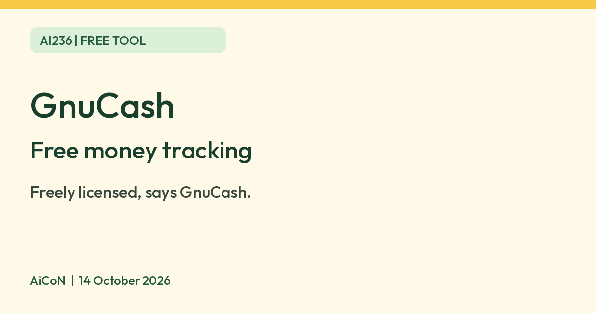

GnuCash: free software to track your money
GnuCash says it is freely licensed accounting software for personal and small-business money. It runs on Windows, macOS and Linux.

GnuCash logo
What it is
GnuCash is software for tracking your money on a computer. Its homepage calls it "personal and small-business financial-accounting software" and says it lets you track bank accounts, stocks, income and expenses. It is not an AI tool. We included it because it is a free tool from an official source.
Is it free?
Yes, going by the homepage, which says GnuCash is "freely licensed under the GNU GPL". We found no price or paid tier on the pages we read.
What it does
- Double-entry accounting, reports and graphs, scheduled transactions and account reconciliation against a bank statement.
- Accounts in different currencies.
- Imports QIF and OFX files, says the homepage.
- It says it is designed to be easy to use, "as quick and intuitive to use as a checkbook register". Double-entry accounting can take time to learn. We did not test how easy it is.
Which devices
- The homepage lists Linux, Windows 8/10/11 and macOS (Apple Silicon and Intel). The homepage shows 5.17, but the download page calls 5.16 its latest stable release. The pages disagree; check the official download and release information before choosing an installer.
- We found no phone version on the pages we read.
Privacy and data
- The features page says the default storage format is XML. It also lists experimental SQLite3, MySQL or PostgreSQL storage and warns that some corner cases can lose data. Default file storage is not a promise that every setup is local-only or never uses a network. Protect your storage location and keep backups.
- The features page lists an online stock and fund quotes feature that gets prices from web sites. We did not find a privacy policy on the pages we read, so we cannot say what it sends.
- Keep a backup of your files.
India
- We found no India-specific statement. The features page says it handles multiple currencies. We did not check Indian rupee or Indian tax support.
Frequently asked questions
Is GnuCash free?
Yes. The homepage says it is freely licensed under the GNU GPL.
Does it work on a phone?
We found no phone version on the pages we read.
Is it AI?
No. It is accounting software. We included it because it is a free tool from an official source.
How to start
- Open the official download page and choose your platform. Check its requirements and current release information; the homepage and download page show different version numbers.
- Start with a separate practice file and simple income/expense entries. Read the Tutorial and Concepts guide linked from Features to understand double-entry accounting, where each transaction balances between accounts.
- Keep original financial records and backups separate. Do not assume an experimental database setup is a substitute for a backup.
- Check reports against your own records before relying on them. AiCoN did not test installation, bank connections, encryption, Indian tax support or accuracy for your accounts.
What changed since this post?
Homepage, download and features pages rechecked on 14 October 2026. Freely-licensed wording remains. Homepage 5.17 versus download stable 5.16 conflict disclosed. Default XML distinguished from optional experimental databases; data-loss warning and online-quote feature retained. No claim of local-only operation, no-network use or privacy-policy protection is made. Logo licence copy/credit added. No installation, traffic or Indian tax test was done.
Sources: GnuCash, Download, Features. Checked 14 October 2026.
Logo: GnuCash logo by the GnuCash developers, GPL v2 or later (Wikimedia Commons, file page). Independent guide, not affiliated.